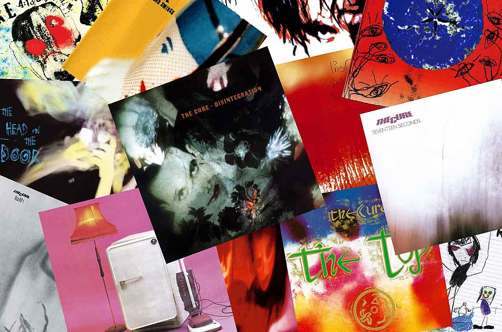

The Cure enter in the 80s not the darkness peddlers of legend but as a band in love with infected punk of Buzzcocks or Elvis Costello.
The early singles and the first album, released in 1979, Three Imaginary Boys gained them buzz but little else.
Released in 1980 their second album Seventeen Seconds and, specifically, single A Forest, would be where The Cure moved towards a darker and atmospherical direction.
From a position of hindsight, the album's inspiration seems to be spanser, more atmospheric side of post-punk of Wire and Joy Division but Smith spent the composition of the album listening and shaping trough the additional influence of Five Leaves Left by Nick Drake , Isle of White live album by Jimi Hendrix , Astral Weeks by Van Morrison and most of all, Low by David Bowie.
As a song, A Forest is not built around a hook or a chorus but an overarching mood that of isolation and loneliness. The instrumentation of the track consists of an ample use of flange guitar with relay added, for a minimalist yet expansive sound. Synth washes sit on the track like rising mist, Lol Tolhurst's drums sound hauntingly flat and breathless, and Simon Gallup's ominous bass line stalks the track.
Smith noted in 2004:
With A Forest I wanted to do something that was really atmospheric, and it had a fantastic sound. [Label owner] Chris Parry said: "If you make this sound radio friendly, you've got a big hit on your hands." I said "But this is how it sounds. It's the sound I've got in my head. It doesn't matter about whether it's radio friendly"
Of the band's limited seven days in the studio, a whole day was spent mixing A Forest such was Smith's devotion to the track. His faith was rewarded, as the song was their debut entry in the UK Single Chart, reaching number 31 and allowing them to appear on Top Of The Pops. The studio version of the track is now somewhat overpowerded by denser, more epic live versions, such as the one present on Concert The Cure live or theri overextended 11 minute rendition at Rock Werchter, known by most as the Fuck Robert Palmer mix.
Despite their hatred for critical labeling, A Forest was the first moment The Cure could be called goth, and the band would get darker and darker with their new two releases.
In 1982 The cure released Pornography. If The Cure's more goth music is considered "suicidal", then Pornography is inches from the endless abyss of oblivion, both sonicaly and literally for the band themselves. It's cacophonous drumming and icy synthwork combined to create some of the most viscerally unsettling music of their career.
It doesn't matter if we all die Ambition in the back of a black car In a high building there is so much to do Going home time, a story on the radio
They had cemented their reputation for being a gloomy doomy, dismal kinda band, and it had drained Smith:
When we came to do Pornography, I really thought that was it for the group. I wanted to make the ultimate fuck-off record, then The Cure would stop.
After taking too many drugs in the assumed last Cure tour, bassist Simon Gallup departed, and Smith returned to a mounth-long detox and wrote the pop-leaning Let's Go To Bed.